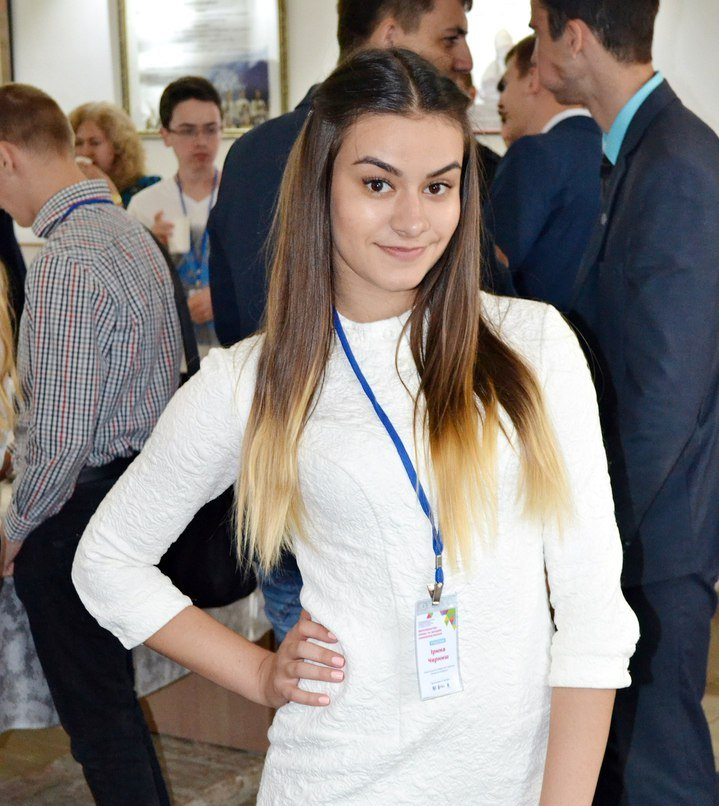
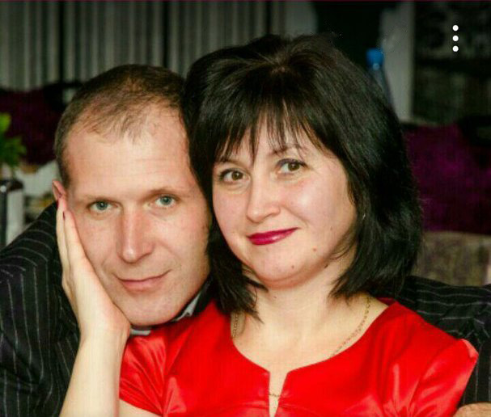
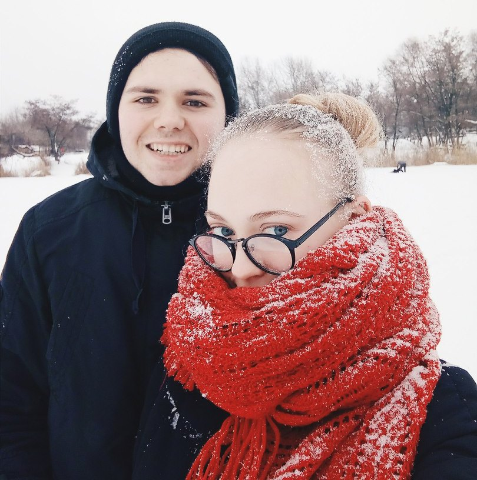
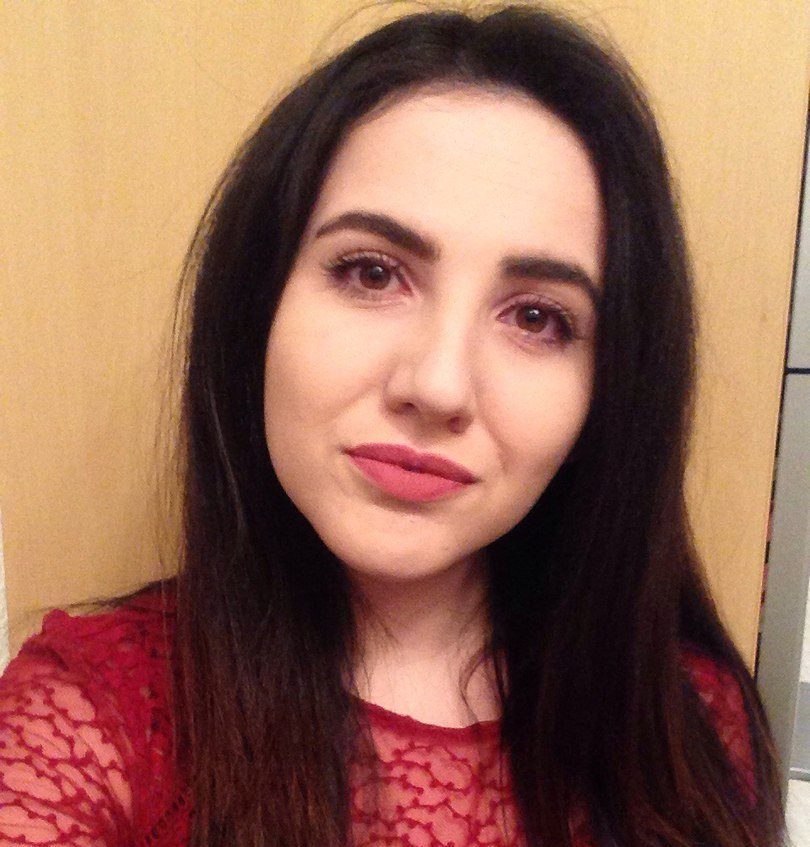
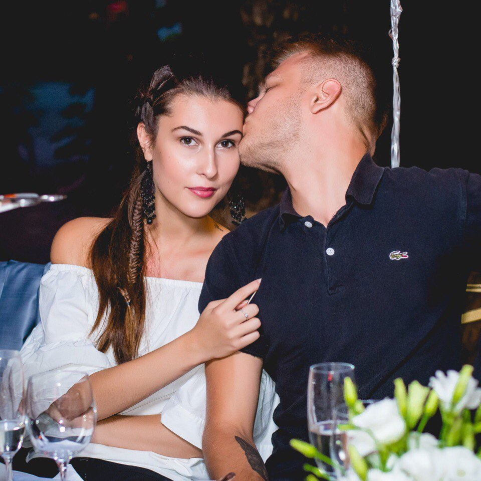
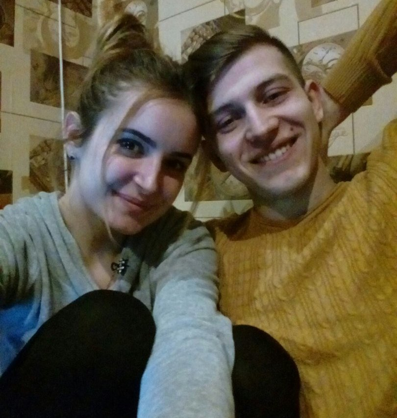

Машулік, моя дорога дівчинка, з днем народження тебе. Від щирого серця бажаю тобі міцного здоров'я, безмежного щастя, палкого кохання, хай тебе по життю супроводжує удача. Хай збуваються усі твої мрії і сподівання, хочу щоб ти завжди була коханою і бажаною, бо ти така чудова і справді достойна цього. Чечерічка, я так рада, що зустріла тебе на своєму шляху, дякую тобі за те, що ти завжди підтримуєш і допомагаєш у важку хвилину, що терпиш мій характер та й просто за те, що ти завжди поруч. Ти прекрасна людина, хочу, щоб ти не втрачала у собі ці риси, а завжди залишалася такою справжньою, щирою, відданою, справедливою, сильною людиною, якою я тебе знаю. Багато від тебе беру і дякую, що завжди є для мене прикладом того, як потрібно боротися за свої мрії і йти до кінця напролом, незважаючи ні на що. За те, що неодноразово доводила мені, яка ти сильна і безстрашна дівчинка! Люблю тебе, любімка, дуже,дуже сильно:*
Дорогая моя! ❤❤❤С тобой мы прошли множество запутанных дорог, видели как хорошее, так и плохое, но ты всегда оставалась моей подругой,да что там подругой,ты давно стала мне сестрой :* В этот особенный день пожеланий в твой адрес будет множество: кто-то здоровья пожелает, кто-то — счастья, успехов, удачи, денег и, конечно, любви. Я же хочу пожелать, чтоб тебя понимали и ценили за твою тонкую душу и сердечность, за твое умение слушать и слышать всех, кто в тебе нуждается. Я тебя очень люблю <
С Днём Рождения,родная!!! Крепко обнимаю и целую :3

Дорогая доченька! Мы поздравляем тебя С твоим Днём Ангела! Желаем тебе здоровья, счастья в жизни. Мы тебя очень-очень любим!

Мария, поздравляю тебя с Днем Рождения) Желаю много денег,здоровья, и чтобы вы с Виталием никогда не расставались. Еще діточок як зірочок! Радуй родителей,и учись хорошо )
Дорогая, Машенька, с Днем рождения!) Желаю тебе быть счастливой, любимой и удачливой!) Пусть тебя вдохновляет каждый новый день и люди вокруг тебя) Добивайся своих целей, а желания пусть сбываются сами! Хочу чтобы рядом с тобой всегда были люди, которые скрасят какие-либо неблагоприятные обстоятельства в твоей жизни, типа душа на улице холодной осенью и предложений попробовать собаку по-корейски от странного сына хозяйки) Люблю тебя, твоя Юля ❤

Машенька, поздравляю тебя с Днкм Рождени. Желаю тебе всего самого наилучшего. Что бы каждый день приносил тебе только радостный эмоции, всегда светило солнышко над головой. Самое главное - здоровья тебе крепкого крепкого. Что бы ты никогда не грустила и оставалась всегда же такой позитивной и жизнерадостной, весёлой. Побольше хороших людей в твоём окружении. Люблю тебя очень. Очень счастлива что ты есть в моей жизни. Удачи в учебе. Спасибо родителям за то что ты у нас есть. P.S. Будь поаккуратнее с колготками :D

Маня,в такой приятный весенний день 21 год назад на земле стало на одного хорошего человека больше. Мы от всей души поздравляем тебя с Днем Рождения!
Мы не будем желать тебе банальностей типа "счастья,здоровья",этого ты за сегодня уже наслушалась.Мы хотим пожелать тебе,чтоб начиная с этого самого момента у тебя в жизни были перемены и только в лучшую сторону.Пусть этот год станет для тебя переломным,не таким как все.Пусть он будет как нечто особенное,беспрецедентное и послужит хорошим фундаментом для дальнейшей жизни без преград,плохих эмоций и неприятных людей.Но ты сама понимаешь,что просто так это не произойдет.С тебя требуется оставаться такой же светлой и чистой душей девочкой,какая ты являешься внутри.И тогда все твои желания начнут сбываться один за одним.
С Днем Рождения,Машка!

Котька-муркотька моя, вот такой небольшой подарочек тебе сделал, надеюсь, что тебе понравилось) Малыш, я тебя очень сильно люблю!) С Днем Рождения, Машенька! Все мои пожелания, ты прочла уже в письме, а что не пожелал я, пожелают остальные) Главное, что бы сбылись все твои самые заветные мечты, которые ты сегодня загадаешь) И надеюсь, что телефон и вк будет усыпан сообщениями с поздравлениями! Ты самая лучшая, коша, я невероятно рад, что ты у меня такая, просто горжусь тобой. Малыш, честно, я не знаю, что уже писать, все тебе изложил в письме, так что, коша, просто будь счастлива и любима!) С Днем Рождения, Машенька!)
Дорогая Маша, тебе двадцать один, а это уже ого-го. Как и желал, оставайся, пожалуйста, красивой и умной. Пусть всё задуманное получается. И знай, что это не самое главное :)
Машуня, С днем рождения тебя, добра в твоей жизни,больше чем существует в мире.
Родных и близких друзей которые всегда могли бы положиться на тебя также, как и ты на них)
Чтобы чистая любовь всегда была с тобой, но во всех делах которыми бы ты занималась.
И животного которого никогда не кинешь, лол)
Найди себя и делай то, чего больше всего хочешь, а не то что "надо"!))